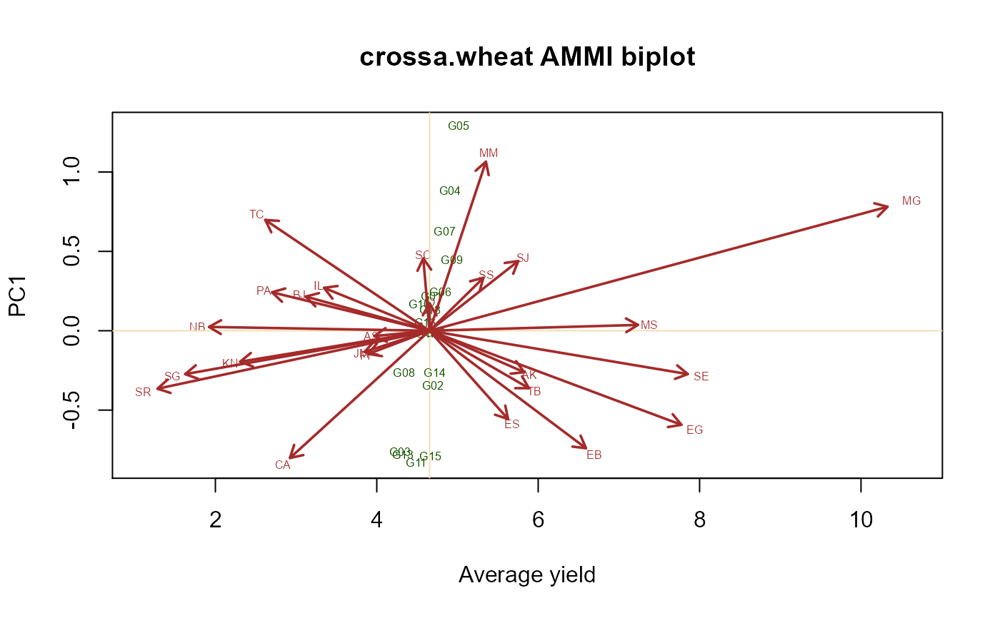
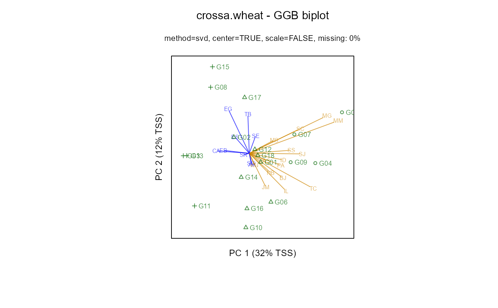

crossa.wheat.RdWheat yields for 18 genotypes at 25 locations
A data frame with 450 observations on the following 3 variables.
loclocation
locgrouplocation group: Grp1-Grp2
gengenotype
gengroupgenotype group: W1, W2, W3
yieldgrain yield, tons/ha
Grain yield from the 8th Elite Selection Wheat Yield Trial to evaluate 18 bread wheat genotypes at 25 locations in 15 countries.
Cross et al. used this data to cluster loctions into 2 mega-environments and clustered genotypes into 3 wheat clusters.
Locations
| Code | Country | Location | Latitude (N) | Elevation (m) |
| AK | Algeria | El Khroub | 36 | 640 |
| AL | Algeria | Setif | 36 | 1,023 |
| BJ | Bangladesh | Joydebpur | 24 | 8 |
| CA | Cyprus | Athalassa | 35 | 142 |
| EG | Egypt | E1 Gemmeiza | 31 | 8 |
| ES | Egypt | Sakha | 31 | 6 |
| EB | Egypt | Beni-Suef | 29 | 28 |
| IL | India | Ludhiana | 31 | 247 |
| ID | India | Delhi | 29 | 228 |
| JM | Jordan | Madaba | 36 | 785 |
| KN | Kenya | Njoro | 0 | 2,165 |
| MG | Mexico | Guanajuato | 21 | 1,765 |
| MS | Mexico | Sonora | 27 | 38 |
| MM | Mexico | Michoacfin | 20 | 1,517 |
| NB | Nepal | Bhairahwa | 27 | 105 |
| PI | Pakistan | Islamabad | 34 | 683 |
| PA | Pakistan | Ayub | 32 | 213 |
| SR | Saudi Arabia | Riyadh | 24 | 600 |
| SG | Sudan | Gezira | 14 | 411 |
| SE | Spain | Encinar | 38 | 20 |
| SJ | Spain | Jerez | 37 | 180 |
| SC | Spain | Cordoba | 38 | 110 |
| SS | Spain | Sevilla | 38 | 20 |
| TB | Tunisia | Beja | 37 | 150 |
| TC | Thailand | Chiang Mai | 18 820 |
Crossa, J and Fox, PN and Pfeiffer, WH and Rajaram, S and Gauch Jr, HG. (1991). AMMI adjustment for statistical analysis of an international wheat yield trial. Theoretical and Applied Genetics, 81, 27--37. http://doi.org/10.1007/BF00226108
Used with permission of Jose' Crossa.
Jean-Louis Laffont, Kevin Wright and Mohamed Hanafi (2013). Genotype + Genotype x Block of Environments (GGB) Biplots. Crop Science, 53, 2332-2341. http://doi.org/10.2135/cropsci2013.03.0178
library(agridat) data(crossa.wheat) dat <- crossa.wheat # AMMI biplot. Fig 3 of Crossa et al. libs(agricolae)#> #> #>m1 <- with(dat, AMMI(E=loc, G=gen, R=1, Y=yield)) b1 <- m1$biplot[,1:4] b1$PC1 <- -1 * b1$PC1 # Flip vertical plot(b1$yield, b1$PC1, cex=0.0, text(b1$yield, b1$PC1, cex=.5, labels=row.names(b1),col="brown"), main="crossa.wheat AMMI biplot", xlab="Average yield", ylab="PC1", frame=TRUE)e1 <- subset(b1,type=="ENV") arrows(mn, 0, 0.95*(e1$yield - mn) + mn, 0.95*e1$PC1, col= "brown", lwd=1.8,length=0.1)#> #>#> #> #># Specify env.group as column in data frame m2 <- gge(yield~gen*loc, dat2, env.group=locgroup, scale=FALSE) biplot(m2, main="crossa.wheat - GGB biplot")